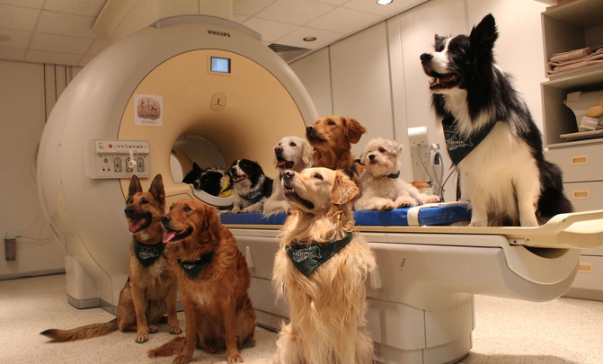

Cuidado integral de mascotas
Brindamos servicios veterinarios completos para mantener a tus mascotas saludables.

Equipo médico especializado
Contamos con un equipo de veterinarios altamente capacitados y comprometidos con el bienestar animal.
Citas y seguimiento online
Ofrecemos la comodidad de agendar citas y realizar seguimientos online para un mejor cuidado de tu mascota.